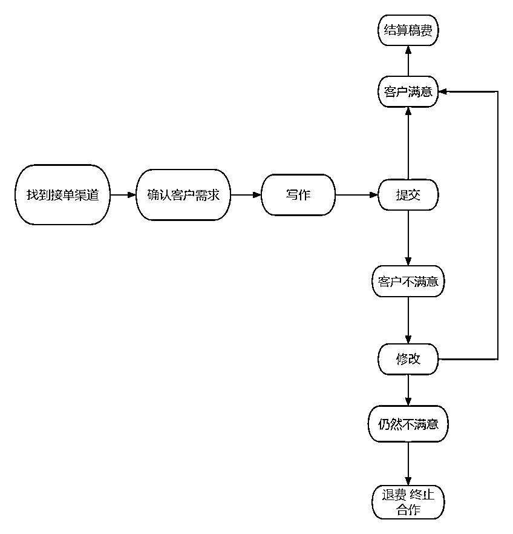
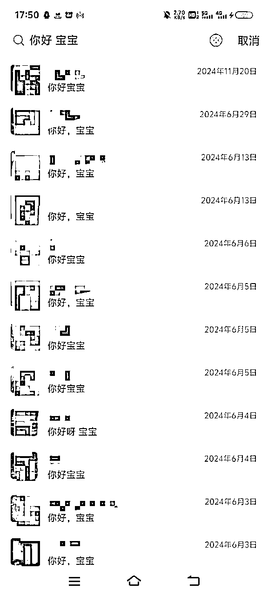
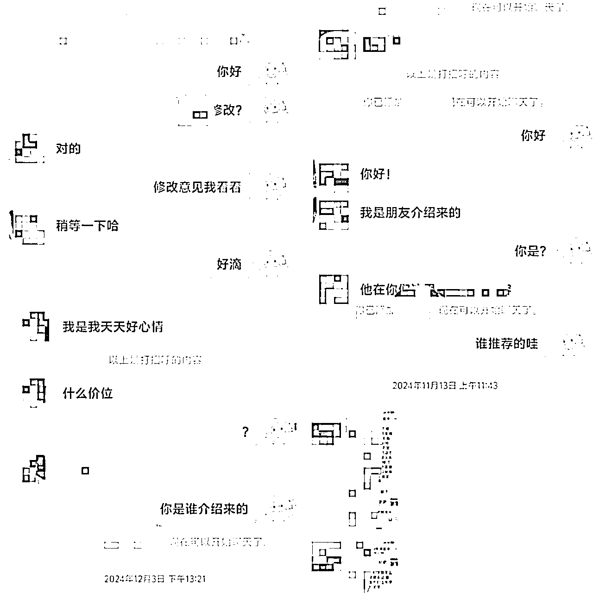
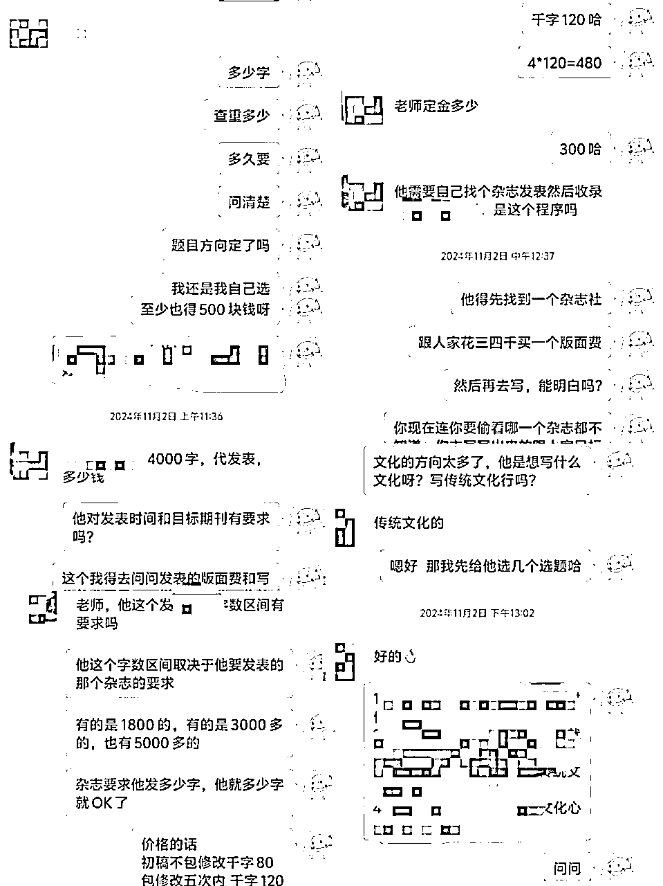
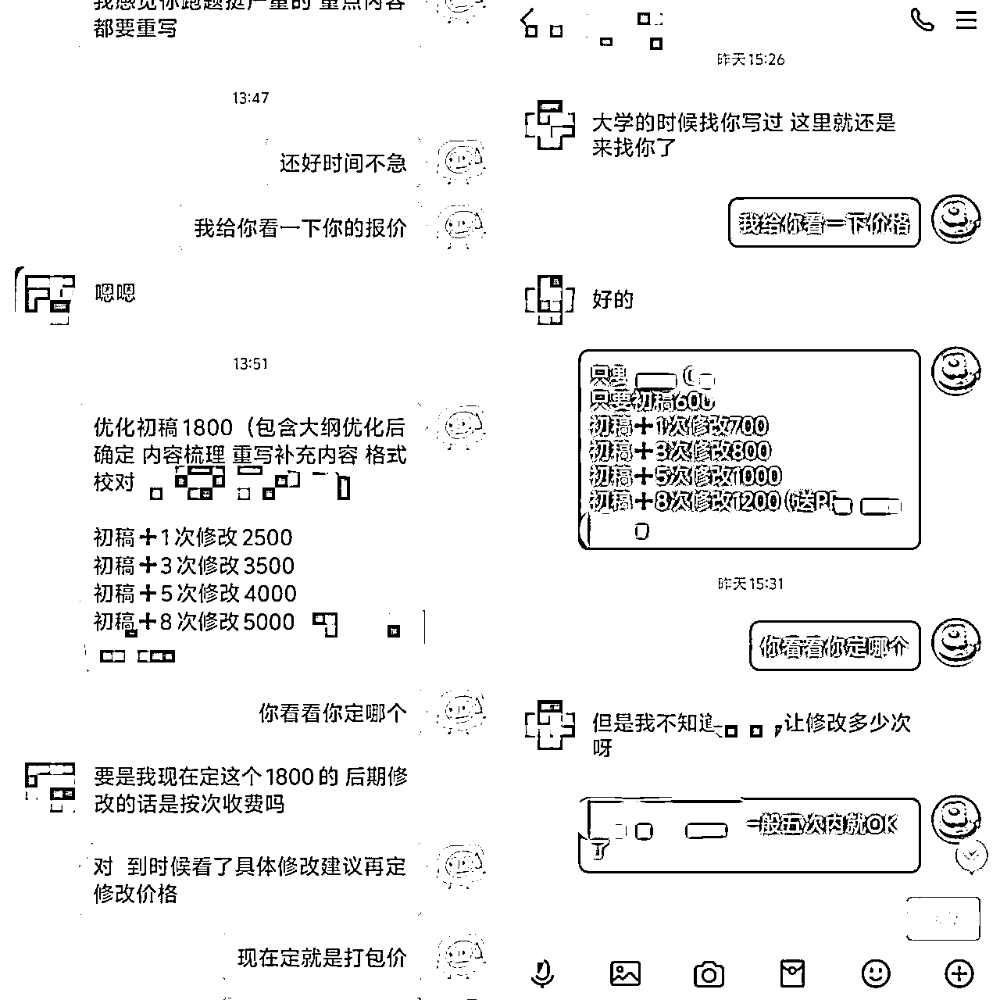
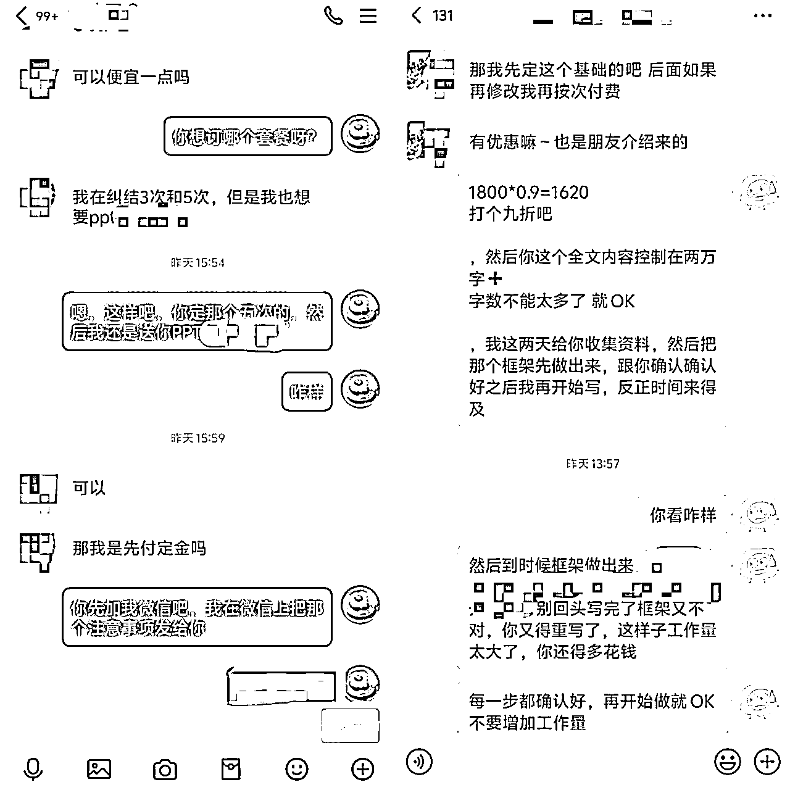
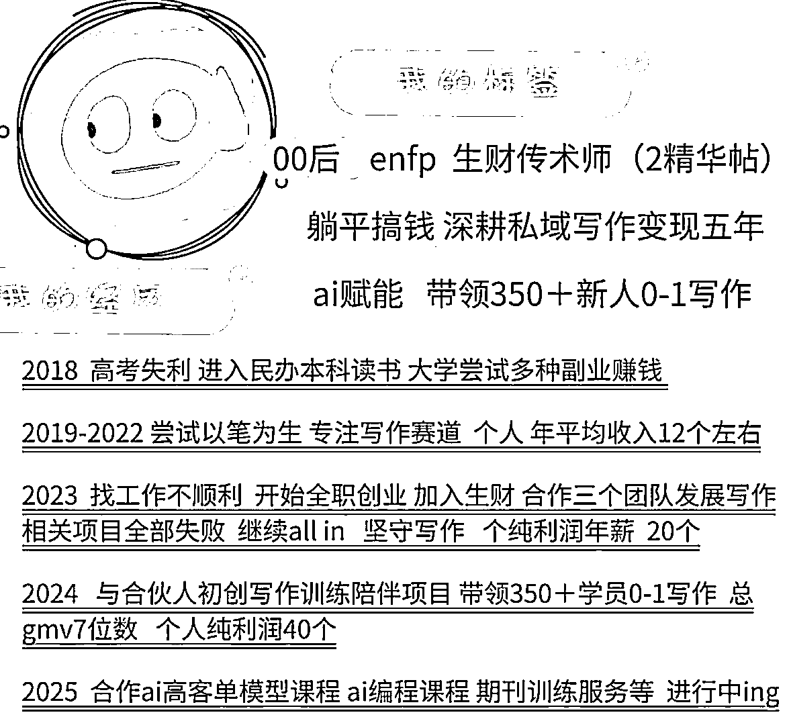

来源：https://lv9qj6hfr4z.feishu.cn/docx/G234dtEwwoIPmtxwkk6cTLiRnTl
荷包蛋五年深耕私域写作行业的私域谈单技巧和一些实操案例 都在这里啦
分享给你们 希望有帮助
建议每个人都要做私域 私域做好了永远不用担心流量问题 我们要做有复利有复购的产品和模式
好的私域运营起来 每年都不用为没有新客源发愁 因此献上这份我的技巧与案例分析
找到接单渠道——确认客户需求——写作——变现
首先是要找寻渠道接单，然后与客户确认写作需求，利用AI完成稿件，提交给客户，从而达成变现。流程图如下，其中最重要的环节 就是谈单和成交 因此 本文后面将介绍私域谈单的相关技巧。

私域运营的核心是人与人的情感连接，
如果你没有建立私域流量，而是完全依赖平台截流或店铺流量，那么每年都需要不断寻找新的客源，而这些客源往往难以长期留存。
私域的价值就在于帮助你摆脱这种困境，通过病毒式营销、老带新、以及高频复购和复利带来的利润，建立一个可持续发展的客户生态。特别是在写作类服务产品中，私域的重要性尤为突出。
私域运营做好了，复购率提升，收入自然更稳定。
不再需要将精力全部放在追逐新流量上，而是优先维护好老客户，确保收入稳定后再拓展新的流量，实现更高的收入增长。
在私域运营中，谈单和转化是关键的第一步。
当新的客户进入时，我们的首要目标是留住他们，而谈单的话术正是影响留存和转化的核心环节，也是我们需要重点学习的地方，私域的重要性就不用我过多赘述了！
在沟通话术中，我发现最常见的问题就是缺乏情绪价值、不够专业以及随意报价，很容易让客户感到不信任，最终导致沟通失败。
解决这些问题并不复杂。
第一步，你必须清楚服务的难度和合理的价格范围，绝不能在完全不了解客户需求的情况下胡乱报价。否则，不仅会让客户反感，后续交付时也容易出现问题。
第二步，要学会用客户能接受的方式去沟通谈判，尤其是在传递情绪价值上，真诚和共情往往比强推更有效。
至于讨价还价阶段，适当的让步是可以的，但一定要守住自己的底线。
要向客户清晰地说明价格的合理性，比如为什么不能再降价，或者我们的服务为什么值这个价格，你能把这些理由说得通透，客户才会认可。
以下是一些错误示范：
问题：语气强硬，给客户施压，容易引起反感，无法建立信任感。
问题：一味强调服务的广泛性，却没有主动了解客户的具体需求，显得冷漠。
问题：回复生硬，只给出笼统答案，没有根据客户提问展开具体说明。
问题：过度强调价格优势，忽略了客户对服务质量和价值的关注。
问题：未明确服务保障或退改政策，让客户对购买产生顾虑。
问题：语气命令化，没有尊重客户的选择权和决策过程。
问题：显得不耐烦，忽略客户的疑虑和心理需求。
问题：缺乏热情和客户关怀，无法与客户建立情感连接，显得冷漠和僵硬。
接下来，我会分享一些我成交的真实案例，具体讲讲我是怎么运用这些方法一步步拿下客户的。
希望通过这些经验，能让大家更好地掌握沟通中的关键技巧。
在与客户沟通前，首先要弄清楚他们是如何找到你的：
针对写作需求，以下问题一定要问清楚：
如果客户之前有类似的写作需求，可以参考他们之前的稿件，了解对文风、逻辑和深度的要求，有助于精准判断难度和定价。
在初步沟通中，可以观察客户的背景和行为判断他们的需求层次和消费能力：
在未完全了解客户需求前，千万不要急于报价。
盲目报价容易损失利润，让客户对你的专业性产生质疑。
详细沟通，明确稿件类型、用途、修改需求后，再给出合理的报价范围。
关键点：在沟通的开始阶段，用温暖、真诚的态度拉近与客户的距离，让客户感到被重视和理解。避免一上来就“推销模式”，先从称呼或氛围建立情感连接，逐步深入需求探讨。
开场还不简单吗？一招教你拉进距离！(仅限年轻人）
，教你们一个通用办法 男生一律叫宝子，女生一律叫宝宝。配上一个可爱表情包 瞬间拉近距离 。
不好意思开口 那你就活该成交低嘎嘎嘎

用亲昵一点的称呼和客户拉进关系 然后询问需求 除了宝子 你也可以 哥哥 姐姐 美女 都可以 但是要自然 亲切 不要太客套 别再跟淘宝一样用 亲 了！！！
当然 也可以 正经一点 直接直入主题 再后续的磋商中来一点点拉进关系 建立信任
直入主题开场案例（真不建议你们这样 ，我感觉这个是错误案例展示，如果你们跟我一样特别有自信能谈下来 且十分专业 可以效仿，这四单 我都成交了 嘎嘎嘎嘎）

实用建议
去掉“刻意热情”：不要用太多修饰语和多余的称呼，直击客户心理，让对方感到你的真诚和干脆。
增加“调侃元素”：适当用一点幽默感，比如夸对方头像、微信名，甚至自嘲，可以迅速打破陌生感。
别绕圈子：避免过长的开场白，保持在一两句内直接引出需求或提问。
关键点：通过提问和引导，明确客户真正的需求和难点，确保后续方案能够精准匹配。
直接和客户询问稿件相关要求 询问包含 用途 字数 交稿时间 语言风格 是否需要修改 等等
如果客户不清楚 要逐步引导客户说清楚需求 这很重要 了解清楚后 总结需求和客户确认
当然 在需求询问的询盘复盘中 也会体现出我们的专业性 让客户认可我们的专业性 从而促使后期成交转化
如以下案例：我逐步引导客户说清楚要求的字数 和方向 然后报价
提问核心要素

逐步引导客户
如果客户不清楚具体需求，通过简单提问引导，让客户逐步理清思路：
“您这篇稿子是用于什么场合？我可以根据用途来推荐合适的方向。”
“大概需要多少字呢？我可以根据字数范围帮您规划写作结构。”
“您是更偏好通俗易懂的风格，还是更注重专业性？”
总结需求并确认
在客户表达完需求后，用简洁明了的语言总结，并让客户确认，以确保沟通无误：
“您的需求是写一篇用于商业汇报的文案，字数控制在1000字以内，注重逻辑性和说服力，并且在2天内完成。请问这样准确吗？”
沟通过程
初步提问
“您好，您需要的稿件是公司内部使用还是对外宣传？”
客户回答：“公司内部用。”
逐步引导
“好的，那是汇报类文稿吗？还是用来展示某个项目的总结或成果？”
客户回答：“应该是项目总结。”
“了解了，那字数大概有要求吗？比如是几页PPT的配套文稿，还是长篇报告？”
客户回答：“字数没定，尽量控制在2000字以内吧。”
“风格上是更偏向简洁明了，还是需要详细阐述数据和结论？”
客户回答：“详细一些，但语言上别太学术化，公司领导喜欢直观的数据和结论。”
总结需求并确认
“您的需求是撰写一篇公司内部的项目总结文稿，字数控制在2000字以内，风格简洁但不失逻辑性，重点突出数据分析和结论总结。这是您的最终需求吗？”
客户确认：“是的！”
报价及后续沟通
“根据您的需求，我们这篇文稿预计的费用是XX元，包括一次修改的服务。您看时间安排是否可以？
需求挖掘的价值
展示专业性：通过提问和总结需求的过程，体现出对客户问题的深入理解和把控，让客户对服务产生信任感。
减少后期修改成本：需求明确后，可以避免因为模糊沟通导致的返工或客户不满意。
提高转化率：精准挖掘客户需求，并给出专业方案，能更快促成成交。
关键点：针对客户的需求和痛点，提供专业建议和具体解决方案，突出自身的能力和服务价值。
不同的稿子有不同的写法 可以给客户刨之前写过的同类型案例 也可以针对客户要求的稿子展开深度讨论 比如 具体什么框架 哪里需要加入什么内容 需要收集哪些数据 可以怎么改？之类的
可以参考以下案例：审阅客户稿子之后 我与客户展开了深度的探讨与沟通 这个是我专业度的展现 也拉进了彼此的信任感 后期可以增加复购概率
补充案例与相关话术模拟：
案例：深度探讨增强信任
客户背景
客户需要撰写一份商业计划书，但对内容框架和核心表达方式不明确，只提供了一些零散的信息和思路。
沟通过程
初步审阅客户提供的资料
客户提供了一些项目背景材料和市场调研数据，但未形成结构化内容。
沟通开始：“我看了您的资料，项目背景和数据都挺丰富，但文稿的逻辑性和结构还需要优化。我们可以这样调整：先用一个清晰的框架把重点梳理出来。”
提供专业建议并展开探讨
框架建议：
引言：用一段简洁有力的开场说明项目背景和目标。
市场分析：结合客户提供的数据，添加竞争优势和市场趋势的分析。
核心产品或服务：突出亮点，用数据支撑卖点。
财务预测：可补充对未来营收和成本的详细说明。
团队介绍：强化团队的专业性和可执行力。
深度讨论：
问题1：市场分析部分数据不完整，建议补充竞争对手的定价策略。
客户回应：“我们手头有一些数据，但还没整理好。”
我的建议：“可以把这些数据简单列出，我帮您整合进文稿，同时结合行业平均水平提升说服力。”
问题2：财务预测部分只提到了总预算，缺少细项拆解。
我的建议：“建议加入每阶段的资金分配计划，比如市场营销、研发投入等。这样投资人更容易理解项目的可行性。”
确认修改方向
“根据我们的讨论，我会在市场分析部分加入竞争对手数据，同时补充财务预测的细项拆解。这些调整会让计划书更有说服力，您看这样可以吗？”
客户反馈：“完全可以！我觉得这个思路非常清晰，接下来就交给您了。”
专业输出的核心价值
体现服务能力：对稿件的深入分析和优化建议，让客户感受到你的专业性。
解决客户痛点：满足客户需求，还能让客户学到更多实用的写作知识，增加认可度。
建立信任关系：深度探讨可以拉近客户关系，为长期合作和复购奠定基础。
关键点：根据客户的预算和需求，设计多层次的服务方案，并通过对比引导客户选择最适合的选项。
1. 分层次报价话术
“宝子，我们的服务分为四个档次，您可以根据需求选择：
初级：20元（原创走心，质量有保证）
中级：30元（老师从事教育、媒体行业，有丰富经验）
高级：50元（速度快，适合加急和要求高的稿件）
金牌：80元（专为领导、重量级稿件打造，专业性文章）
所有稿件都原创且包修改，主要区别在老师的资历和交付速度上。您觉得哪种更适合呢？”
2. 套餐报价话术
“我们还有修改次数的打包套餐，适合需要多次调整的稿件：
初稿 600：适合简单需求，定稿即交付。
初稿+1次修改 700：可根据反馈调整一次。
初稿+3次修改 800：适合需要多次润色的客户。
初稿+5次修改 900：保证稿件精细调整到满意为止。
初稿+8次修改 1000：适合专业性要求极高的稿件。”
“您看，结合您的需求和预算，推荐‘初稿+3次修改’，这款性价比最高，您觉得呢？”
3. 修改单独打包话术
“如果您已经有初稿，只需要修改服务，我们也有单独的修改报价：
1次修改 500：适合轻微调整。
2次修改 800：针对细节和逻辑调整。
3次修改 1200：适合整体优化。
5次修改 1500：全方位精细打磨。”
“如果您的稿件内容比较复杂，建议选择3次或5次修改服务，这样能确保最终质量达到您的要求。您觉得呢？
参考案例：先说明情况的严重性质 和工作量 然后阶梯报价 让客户选择 当然 也可以先询问客户预算 阶梯报价区间内一定要包含客户预算在内的价格 符合客户预期！

关键点详解
分层次报价
根据客户的预算、稿件复杂度、时间要求等设计多种服务档次，让客户感受到选择的灵活性和服务的公平性。
低价入门：适合预算有限但对质量要求不高的客户。
中档升级：为客户提供性价比高的选择，适合对质量有一定要求的客户。
高端定制：满足时间紧迫、要求高、专业性强的客户需求。
套餐报价
针对不同需求组合打包报价，比如初稿+修改服务，既提升客户体验，也能增加成交概率。
询问预算，匹配价格
如果客户预算明确，可以直接在阶梯报价中推荐符合预期的选项，并突出该价格的服务价值。
案例：阶梯报价引导成交
客户需求
客户需要撰写一篇商业计划书，对专业性要求较高，但预算不明晰。
沟通过程
说明工作量
“商业计划书的结构通常较复杂，需要涉及数据分析、竞争分析等内容。我看了您的需求，整体上会花费较多时间和精力。”
提供阶梯报价
“根据您的要求，我提供三个选择：
中档服务 3000元：包括初稿+1次调整，适合不需要过多修改的场景。
高档服务 4000元：包括初稿+3次调整，可以根据领导反馈优化内容。
顶级定制 5000元：包括初稿+无限次修改，直到完全满意为止。”
询问预算并调整
“您觉得哪个选项更符合您的预算和需求？如果预算有限，我可以为您调整部分内容，减少不必要的模块。”
客户反馈预算在3500左右。
调整报价：“那我们可以选择高档服务，并在优化范围内稍作调整，这样既符合您的预算，也能确保稿件质量。”
促成成交
客户确认选择高档服务，并表示满意。
总结
多维报价的关键在于灵活性和透明度，让客户感受到价格与服务价值的匹配。
阶梯报价满足不同客户的预算需求，专业性引导客户选择更高价位的服务。
沟通中突出价值：对工作量的说明和调整方案的建议，强化客户对服务的认可感，从而促成高效成交。
关键点：在报价和谈判中，适当给予客户优惠，但必须保持底线。清晰说明服务价值，让客户明白价格的合理性。
经过前面的层层引导 与沟通 都到最后了 就是讨价还价环节 有销售经验或者购物经历的人都能理解 肯定会到讨价还价 环节 用贸易专业术语叫:询盘 回盘
适当的给出优惠 比如 9折 88折 比如送1-2次修改 后期送一些附加服务
如果客户是老客户介绍来的 可以说看在朋友介绍的份上给你优惠价 xx折扣 成交之后别忘了给推荐客户的朋友一个红包哦 鼓励他们继续复购 继续推荐 继续裂变
参考报价与优惠话术
优惠折扣话术
“宝子，看您这么信任我，这次给您个优惠价，原价XX元，现在给您9折，算下来只要XX元。”
“看在您是朋友介绍来的份上，这次就给您88折吧，，感谢他推荐了这么好的客户！”
“您这次是初次合作，给您一个新人专属价，成交之后可以赠送一次修改服务哦。”
增加附加值话术
“这次我帮您把初稿服务的修改次数从1次提升到3次，保证您满意为止！”
“原本服务只提供一个月支持，看您需求比较紧急，这次免费帮您延长到三个月服务时间。”
“稿件完成后，如果您有额外的小需求，比如格式调整，我也可以免费帮您处理一次。”
老客户或推荐客户优惠话术
“感谢您是老客户，这次直接给您88折，同时增加一次免费的修改服务。”
“这次是朋友介绍的客户，特别给您个友情价，送您两次修改服务，您也多帮我给朋友说声感谢！”
给推荐人反馈：
“您的朋友已经成交啦！感谢您推荐，给您一个小红包，期待下次继续合作！”
关键点详解
把握底线
在讨价还价的环节，适当给予优惠，但不能过度让步，要确保利润空间和服务价值。优惠的幅度要有说服力，同时凸显你的诚意和专业性。
增加附加值
如果直接降价会影响服务利润，可以通过增加修改次数、延长服务时间、送额外服务等方式增加客户感知价值，让客户感到“超值”。
注重客户关系
老客户或朋友介绍：给出“人情式优惠”，表达感谢，增加客户信任感和满意度。
鼓励推荐裂变：成交后，及时感谢推荐客户的朋友，赠送红包或额外奖励，鼓励他们继续带来更多客户。
参考案例：一个送了修改次数增加服务时间 一个打了折扣

案例：适当优惠促成成交
案例1：增加修改次数促成成交
场景：客户需要一篇商业文案，但希望能多次调整内容以符合领导要求。
原报价：3000元，含1次修改。
客户反馈：“这个价格有点超预算，还需要多改几次。”
我的回应：“这次看在您是第一次合作的份上，我帮您把修改次数提升到3次，价格不变，您看怎么样？”
结果：客户觉得服务增加了，性价比提升，顺利成交。
案例2：打折优惠加裂变奖励
场景：客户是朋友介绍，预算有限。
原报价：5000元。
客户反馈：“朋友推荐了您，但这个价格对我们公司来说有点高。”
我的回应：“朋友介绍的客户，我一定给最优惠的价格。这次给您88折，还送一次免费的后期优化服务。成交后，我也会感谢您的朋友！”
结果：客户认可优惠，同时朋友收到了红包反馈，对推荐服务更加积极。
一句话总结
适当让利是成交的润滑剂，但要学会把优惠做得有策略，既体现诚意，又能稳住服务价值，最终实现客户满意和复购裂变！
A: 我们的服务不仅注重结果，更注重过程。
A: 当然可以！我们会通过几个简单的问题帮您梳理需求：
A: 我们提供多次修改服务，直到您满意为止。
A: 针对不同客户我们有专属优惠：
A: 根据稿件复杂程度和您的紧急程度，我们有多种交付周期：
快速成交的关键在于 建立信任 和 制造紧迫感。
问题1：信任不足，客户犹豫不决
原因：客户对服务价值存疑或对商家专业性不够信任。
解决方法：
展示成功案例：分享与客户需求类似的真实案例，让客户看到实际效果。
话术示例：
“我们之前服务过一位客户，和您情况类似，写了一篇演讲稿，最后获得了全场好评。这次我们也可以为您提供同样高质量的服务！”
强调服务保障：突出原创性、多次修改服务和长期支持，降低客户风险感。
问题2：未抓住客户需求痛点
原因：谈话过于笼统，没有针对客户的具体问题给出解决方案。
解决方法：通过提问明确需求，并提出针对性的解决方案。
话术示例：
“您刚提到稿件是用来汇报项目的，我建议结构上采用逻辑清晰、数据为主的形式，这样更容易打动领导。”
“如果这篇稿件时间紧，我可以提供加急服务，保证质量的同时按时交付，您放心！”
问题3：缺少成交驱动因素
原因：没有制造“现在下单”的理由，客户容易拖延决策。
解决方法：制造紧迫感或提供限时优惠。
话术示例：
“今天下单享受9折优惠，明天可能恢复原价哦！”
“这次订单我可以免费帮您加一次修改，但优惠只限今天。”
对观望的客户，需要更细致地分析他们犹豫的原因，并针对性引导。
问题1：客户对价格敏感
原因：预算有限，担心价格过高不值得。
解决方法：通过对比和增值服务突出性价比。
话术示例：
“虽然我们的价格略高，但包括了原创、定制和多次修改服务，这些在其他平台是没有的。”
“我们有基础套餐可选，价格更实惠，同时可以升级其他服务，完全根据您的预算来调整。”
问题2：客户对服务结果不确定
原因：客户不确定服务是否能达到预期效果。
解决方法：提供免费小样或详细的解决方案。
话术示例：
“我可以先为您提供一小段写作样例，您觉得合适的话再继续合作。”
“我们已经为很多客户提供类似服务，效果非常好，我可以先发一份案例供您参考。”
问题3：缺少足够的信任感
原因：对商家的承诺或服务流程存在疑虑。
解决方法：通过客户评价或流程透明化建立信任。
话术示例：
“我们每篇稿件都有专属团队负责，全程与您保持沟通，确保最终满意。”
“可以看看我们之前客户的评价，基本都是五星好评，大家对我们的服务都很认可。”
问题4：缺乏紧迫性或激励
原因：客户觉得随时都可以下单，没有紧迫感。
解决方法：通过限时优惠、赠品或稀缺性激发客户行动。
话术示例：
“我们现在正在做活动，下单即送两次修改服务，错过就没有啦！”
“这个档次的服务今天只剩两个名额，您决定的话我马上帮您锁定。”
话术补充
促单话术推荐：
限时优惠促单
“我们今天有专属优惠，9折+赠送修改服务，您看现在要不要抓住？”
稀缺性激发
“这次合作的高级服务名额已经快满了，如果您决定得晚了，可能要排到下周了。”
反向引导策略
“如果您现在还不确定，也没关系，可能后续安排会稍微紧一些，但我们会尽力安排到您这边。”
（缓和语气让客户有“失去机会”的心理压力，反向促成行动。）
总结
对快速成交的客户，核心是 信任感+紧迫感，用真实案例和限时优惠刺激客户行动。
对观望客户，重点在于 引导需求+解除顾虑，专业性和增值服务消除他们的犹豫。
私域谈单的话术需要灵活调整，核心是基于客户心理，逐步引导并促成成交，同时注重长期关系的维护和裂变扩展。
目前就先总结这些啦 学会这些小技巧 对于新人来说 可以处理大部分常用场景 如果觉得有所帮助 可以点点赞 也可以链接我 找不到我可以联系鱼丸链接我哈

布道传术 成人达己 ！！布道传术 成人达己 ！！布道传术 成人达己 ！！布道传术 成人达己 ！！